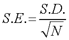
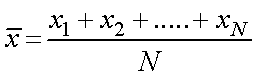
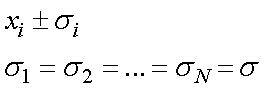
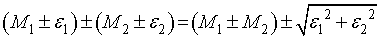
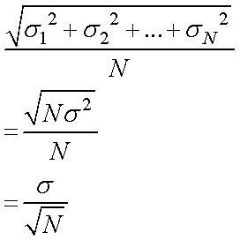

さて，一般によく使われるのが，標準偏差（S.D.)，ですが，
標準誤差（S.E.)
というものもあります，その関係は，

です．Nは試行回数，です．
ではいったい何が違うのでしょう？
・標準偏差
これは，
得られたデータがどのくらい散らばっているか
と言うもので，散らばりぐらいの程度を示します．
この散らばりは，データ数，試行回数，に依存しません．
たとえば，
インクを水の中に垂らし，一定時間後のインクの分布
を考えると，垂らしたインクの量に依存しないことが直感的にわかりますね．
・標準誤差
それに対して，標準誤差は，
繰り返し試行（実験）した際，その平均値がどの程度の確度を持っているか
というものです．
誤差を含む実験の場合，得られたデータにばらつきを生じます．
目的とする推定値は平均，として見積もるのですが，
少ない試行回数より多い試行回数の方が確実性を増す
というのも直感的に理解できると思います．
それが，分母のルートN，に効いてくるわけです．
つまり，
100回試行すれば，その信頼性は10倍に
10,000回試行すれば,その信頼性は100倍に
上がるわけです．
では，なぜ？ルートNなのでしょうか？
この概念は思ったより簡単で，誤差伝搬法則，より求めることができます．
試行回数N回行い，その平均値は，

となります．
どの結果，xi，も同じ実験ですので，真の値Xは同じで，その分布σ，も同じです．
つまり，

ですので，誤差伝搬法則の加算，を使って，

これを拡張すれば，誤差は，

となるわけです．
この議論は，
誤差解析入門（東京化学同人）
を参考にさせていただきました．